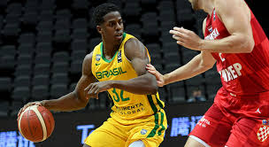

Assistência: passe ao jogador que, logo em seguida, faz uma cesta.
Roubo de bola: quando o jogador consegue tirar a bola do adversário após um drible malsucedido.
Enterrada: quando o atleta “crava” a bola na cesta do adversário sem precisar arremessá-la.
Ponte aérea: passe alto de um jogador para o outro, que, em seguida, faz cesta com a bola ainda no ar.
Toco: jogada defensiva com o bloqueio de um arremesso quando a bola avança de maneira crescente no ar.
Duplo-duplo: quando o jogador consegue, pelo menos, 10 em dois quesitos diferentes: pontos, rebotes ou assistências.
Triplo-duplo: quando o jogador consegue, pelo menos, 10 pontos, 10 rebotes e 10 assistências."
""Basquete no Brasil""

"A chegada do basquete ao Brasil aconteceu em 1896. O responsável por trazer o esporte para o país foi o missionário americano Augusto Shaw, que aplicou a prática no Colégio Mackenzie, em São Paulo.
No período de introdução ao esporte, as mulheres tiveram maior interesse pela prática. Shaw teve dificuldades, no início, de incentivar o jogo aos homens, uma vez que eles tinham maior apreço pelo futebol. O jogo era muito praticado, no início, nas Associações Cristãs de Moços.
O primeiro torneio do esporte no país foi realizado no Rio de Janeiro, em 1912. A primeira obra com as regras do basquete traduzida para o português foi lançada em 1915, o que permitiu uma compreensão melhor da prática bem como sua difusão pelo país. Com isso, várias escolas e clubes passaram a adotar esse esporte.
Em 1922, foi feita a primeira convocação da Seleção Brasileira de basquete para disputar um torneio contra as equipes do Uruguai e Argentina. Com um técnico dos Estados Unidos, Fred Brown, a Seleção ganhou o seu primeiro torneio. No dia 25 de dezembro de 1933, foi criada, no Rio de Janeiro, a Federação Brasileira de Basketball, atual Confederação Brasileira de Basquetebol (CBB).
Conhecido como Mão Santa, Oscar Schmidt é o grande destaque brasileiro no basquete. O potiguar é considerado o maior pontuador da história do esporte no mundo. Ao longo de 1613 partidas, Schmidt fez 49.703 pontos, uma média de 30,8 por jogo. Ele também foi quem mais pontuou em competições da Fiba, com 906 pontos em 34 partidas."